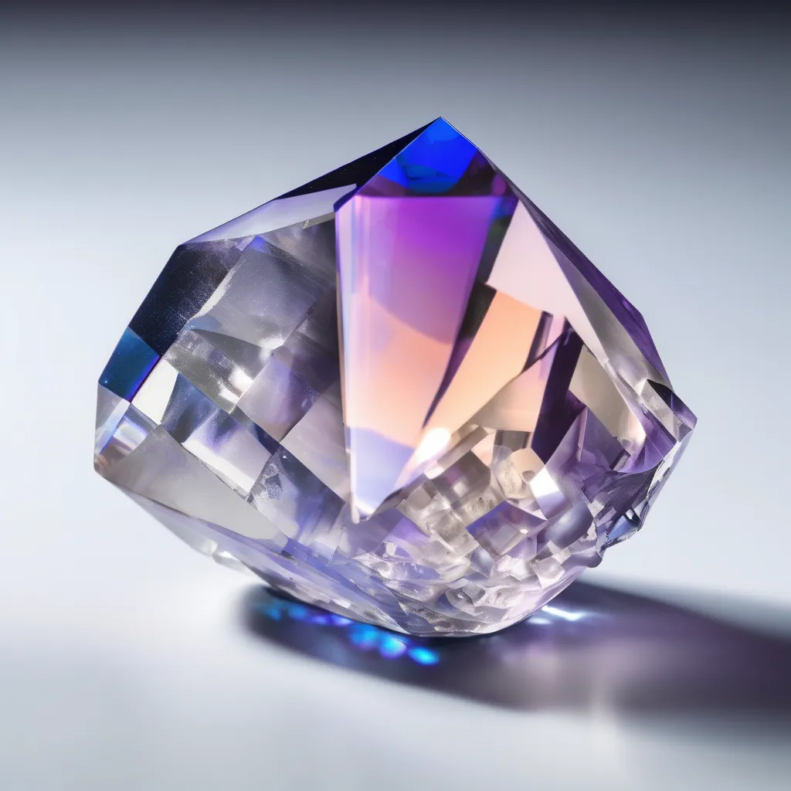

What is lightrubitium?
The element lightrubitium is collected by compressing the atmosphere of the planet Alpha Canis Majoris Station.
The picture above is a picture of a newly refined lightrubitium.
What is a light leaper?
You might say. What does this wristband do? How does this wrist band make us travel long distances? Well here it is, the wristband that can make you travel at the speed of light. Some versions can even make you travel at the speed more than 100 times the speed of light. It is completely safe. You are not able to leave the leap during the middle incase your in danger. Only the if the customer and the producer both agree to desable the light leaper, then the light leaper will be disabled. The light leaper is made with the newest material that we found on the second planet of the solar system Alpha Canis Majoris B.

The new crystal like element called lightrubitium. It is very unstable when orginally collected, but will soon be stabilize after refinement.
Explanation of how it works.
Lightrubitium can magnify light and spread them on to you body. Then the magnified light will turn your body into massless particals such as photons. According to the energy-momentum relation, the four-momentum 𝑝𝜇=(𝐸/𝑐,𝑝) which P means momentum and E means encompasses energy. This equation explaines how the lightrubitium can turn you into massless particals and how it can make you go at the speed of light or faster than light.